The phase vocoder usually refers to the general technique of passing from (complex-valued) channel amplitudes to pairs consisting of (real-valued) magnitudes and phase precession rates (``frequencies"), and back, as described in Figure 9.11 (Section 9.5). In Example I07.phase.vocoder.pd (Figure 9.18), we use this technique with the specific aim of time-stretching and/or time-contracting a recorded sound under real-time control. That is, we control, at any moment in real time, the location in the recorded sound we hear. Two new objects are used:
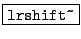:
shift a block left or right (according to its creation argument). If the
argument is positive, each block of the output is the input shifted that number
of spaces to the right, filling zeros in as needed on the left. A negative
argument shifts to the left, filling zeros in at the right.
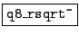:
quick and approximate reciprocal square root. Outputs the reciprocal of the
square root of its input, good to about a part in 256, using much less
computation than a full-precision square root and reciprocal would.
The process starts with a sub-patch, pd read-windows, that outputs two Hann-windowed blocks of the recorded sound, a ``back" one and a ``front" one 1/4 window further forward in the recording. The window shown uses the two outputs of the sub-patch to guide the amplitude and phase change of each channel of its own output.
The top two tabreceive~ objects recall the previous block of complex
amplitudes sent to the rifft~ object at bottom, corresponding to
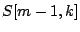 in
the discussion of Section 9.5. The patch as a whole computes
 and then its Hann windowed inverse FT for output.
and then its Hann windowed inverse FT for output.
After normalizing , its complex conjugate (the normalized inverse)
is multiplied by the windowed Fourier
transform of the ``back" window 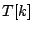, giving the product 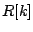 of
Page  .
Next, depending on the value of the parameter ``lock", the computed value of
is conditionally replaced with the phase-locking version 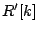. This
is done using lrshift~ objects, whose outputs are added into if
``lock" is set to one, or otherwise not if it is zero.
The result is then normalized and multiplied by the Hann-windowed Fourier transform
of the ``front" window (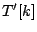) to give
.
Next, depending on the value of the parameter ``lock", the computed value of
is conditionally replaced with the phase-locking version 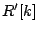. This
is done using lrshift~ objects, whose outputs are added into if
``lock" is set to one, or otherwise not if it is zero.
The result is then normalized and multiplied by the Hann-windowed Fourier transform
of the ``front" window (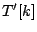) to give  .
.
Three other applications of Fourier analysis/resynthesis, not pictured here, are provided in the Pd examples. First, Example I08.pvoc.reverb.pd shows how to make a phase vocoder whose output recirculates as in a reverberator, except that individual channels are replaced by the input when it is more powerful than what is already recirculating. The result is a more coherent-sounding reverberation effect than can be made in the classical way using delay lines.
Example I09.sheep.from.goats.pd demonstrates the (imperfect) technique of separating pitched
signals from noisy ones, channel by channel, based on the phase coherence we
should expect from a Hann-windowed sinusoid. If three adjacent channels are
approximately  radians out of phase from each other, they are judged to
belong to a sinusoidal peak. Channels belonging to sinusoidal peaks are
replaced with zero to extract the noisy portion of the signal, or all others
are replaced with zero to give the sinusoidal portion.
radians out of phase from each other, they are judged to
belong to a sinusoidal peak. Channels belonging to sinusoidal peaks are
replaced with zero to extract the noisy portion of the signal, or all others
are replaced with zero to give the sinusoidal portion.
Example I10.phase.bash.pd returns to the wavetable looping sampler of Figure
2.7, and shows how to align the phases of the sample so that all
components of the signal have zero phase at points 0,  , 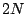, and so on. In
this way, two copies of a looping sampler placed
, 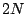, and so on. In
this way, two copies of a looping sampler placed  samples apart can be
coherently cross-faded. A synthetic, pitched version of the original soundfile
can be made using daisy-chained cross-fades.
samples apart can be
coherently cross-faded. A synthetic, pitched version of the original soundfile
can be made using daisy-chained cross-fades.